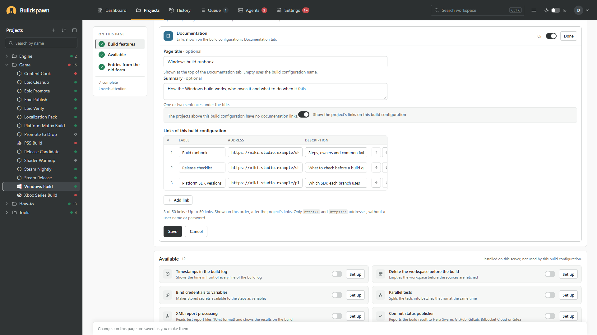

Documentation
Adds links to the Documentation tab of the build configuration.
When to use it
Use it for the runbook, the release checklist or the SDK page. The full description is on Documentation links.

How to set it up
- Open the build configuration, click Settings, then Build Features. Click Add build feature and choose Documentation.
- Give the section a Title and a one-line summary.
- Add a link: label, address and short description.
- Click Save.
Every field
| Field | What it does | Default | Example |
|---|---|---|---|
| Title | The heading of the section. | Empty | Windows build runbook |
| Summary | One line under the title. | Empty | Who owns it and what to do when it fails. |
| Link: label, address, description | The page to link. Only http and https addresses are accepted. | Empty | https://wiki.studio.example/skyforge-build |
| Show the project’s links on this build configuration | Show the links of the projects above, too. | On | On |
A worked example
The Windows Build shows a link to the studio wiki page How the Windows build works. People find it on the Documentation tab when a night build fails.
What you see when it runs
The Documentation tab appears after Overview as soon as there is at least one link.
Problems and fixes
| Problem | What to do |
|---|---|
| No Documentation tab | The tab only shows when a link exists, and the feature must be on. |